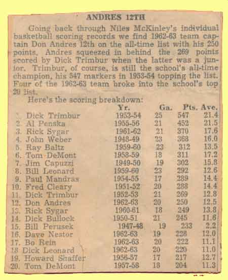

Ward-Thomas Museum


Coach Joe Bassett
Ward — Thomas
Museum
Home of the Niles Historical Society
503 Brown Street Niles, Ohio 44446
Click here to become a Niles Historical Society Member or to renew your membership
Click on any photograph to view a larger image, click on image again to zoom into photograph.
| Left: Testimonial letter to Joe Bassett recognizing his athletic accomplishments as basketball and football coach, signed by the 1965 Niles McKinley High School faculty. |
Two
Undefeated Teams in the Same Year–1954. As head basketball coach for 18 seasons, he compiled 225 victories and 126 losses. In 1954 he coached the first undefeated team in the school’s history recording five wins in NEO Sectional tournaments, one win in the Ohio State High School Regional tournament, three wins in the NEO District Tournament and the Ohio State semi–finals in 1949. He was one of only three coaches to go undefeated in two sports in one year, 1954.
In his seven years at the head of the coaching helm, Bassett has compiled 154 wins and 34 losses. Two years the Bassettmen have come within shooting range of the High School Championship crown only to be knocked off in the final tournament contests. First Hamilton, Ohio, which went on to win the
state title, turned the trick in 1949 with a 49-39 score. This
year (1954), Canton South was the spoiler by handing the red and
blue the short end of a 60-54 count. |
|
Football coaches of the undefeated 1954 team. |
Undefeated 1954 football team. |
1922 Niles football team with Joe Bassett. |
Front: Bob DeMont, Dick Trimbur, Don Mohn, Coach Bassett, Paul Collins, Bill Quilty and Paul Mandras. Back: Hewitt, Bruce Boron, Dick Grainger, Ronald Filipan, Tom LaPolla, Albert Penska, Tom Gonella, M. Bono, Phil Guiliano, D. Quilty and M. Naples. PO1.1331 |
1954 Unbeaten Varsity Basketball Team. Not only was this a championship team but Dick Trimbur made the first team All-Ohio. He set a school scoring record of 421 points and his season total was 547 points.
|
1953-54 undefeated basketball
team. |
|
1953-54 Niles McKinley Basketball squad
1954 Undefeated Niles Football Team |
||
|
1949 Basketball team - district and regional champions that made it to State semi-finals. PO1.1328 |
1949 Basketball Team Row 1: John Altobelli, Reginald Giancola, John Pela, Paul Lewis, Lawrence Lobaugh, John Weber, John Merrill, Bob Brooks, Mgr. Bob Murphy. Row 2: Mgr. John Blakely, Mgr. Ronald Scarnecchia, Joe B. Williams, David Jenkins, James Capuzzi, Carmen Cicero. Row 3: Jack Williams, Joe Mordent, Palmer Calderone, Bud Burlingham, Dick Bullock. |
1949 Regional Basketball Championship blanket with Joe Bassett monogram. |
| |
||
|
Joe Bassett with Jefferson |
Of his 31 years with the Niles School System, Joe Bassett spent 21 years in the guidance Department and had previously taught science and physical education. He retired from the school system in 1978 citing, “I have reached the apex of a career in education and I feel I can’t go any higher in the field. I can’t stand still. I feel I have eight more years of activity ahead of me.” He also served as Recreation Director for Niles, Girard, and the City of Warren under the Federal Works Agency. He was also a field representative and supervisor for Trumbull and Portage Counties. Born March 30, 1906 in Niles, Ohio, he was the son of Nicola and Maria Angela Mango Bassett and spent his life in the city. Surviving are his wife, Lucille Altiero Bassett, also a retired teacher from the Niles School Schools to whom he was married October 31, 1942, one brother, James, and one sister, Mrs. Theresa DeMatthews, both of Niles. One brother and three sisters preceded him in death. |
|
|
Cinderella Teams of the Past-Move over. Niles Daily Times March 3, 1962 The team includes Managers Larry Verhosek and Ray Venetti, team: John Knight, Bo Rein, Rick Sygar, Carmen Vivolo, Dave ‘Pinky’ Altiero, Dick Leonard, Tom Grainger, Tom James, Jim Hutchings, Jim Berline, Dave Nestor with head coach Joe Bassett and assistant coach Bill Swift. The Dragons now make tracks for the District playoffs in the footsteps of two other unheralded McKinley quints, the teams of 1949 and 1960. (The 1954 team was undefeated in regular season competition). All three teams, under the guidance of Joe Bassett, have followed the identical pattern, suffering through a miserable regular season only to suddenly catch fire and burn up the tournament trail. |
||
Niles McKinley Individual Scoring Records  |
Niles McKinley 1962 Basketball Team
The 1962-63 edition of the Niles McKinley basketball Red Dragons, including the junior varsity. L-R: Front row: Dick Leonard, Jim Jennings, Bill Gales, Bob LaRicca, Henry Kover, Dave Allen and Jim Berline. Second row: Tom Moore, Richard Corea, Ron Miller, John Sawyer, Dick Swindler, Bob Penska, Bill Yuhasz, George Infant and Nick Chieffo. Back row: Tommy James, Bo Rein, John Knight, Jim Hutchings, Dave Nestor, Carl Hendry and captain Don Andres. |
Don Andres, No. 33, fights for basketball.
Coach Joe Bassett enters his 17th season at Niles. He's being assisted by JV mentor, Bill Swift, for the second straight year. |
|
|
||


{kind=link}
{kind=link}
{kind=link}
{kind=link}
{kind=link}
{kind=link}
{kind=link}
{kind=link}
{kind=link}